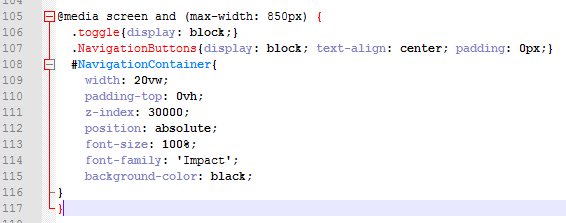
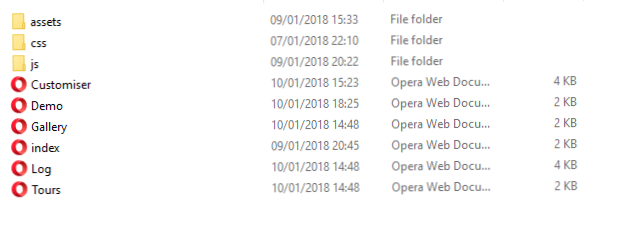
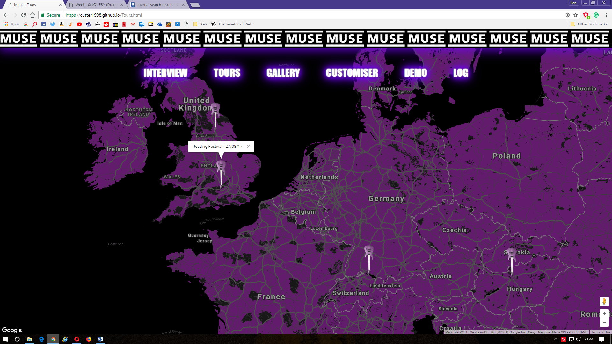
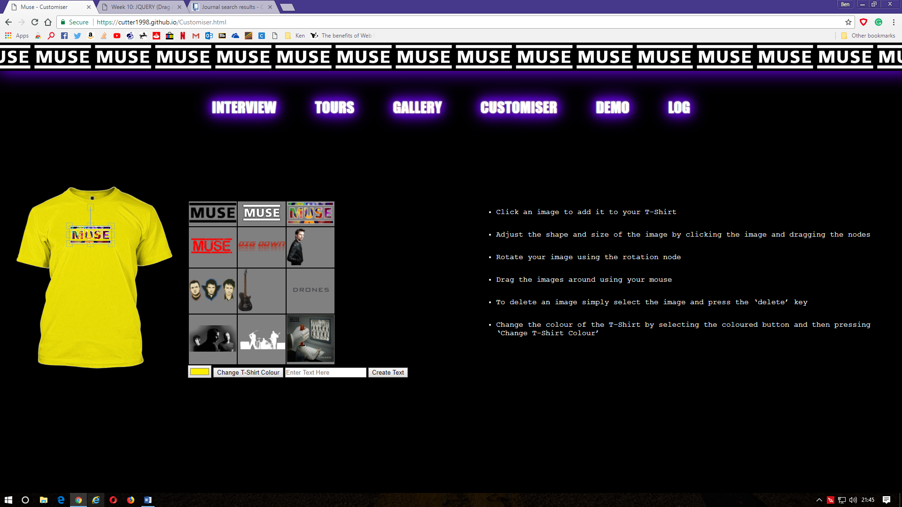

My assessment for this module was to design a website featuring hyperlinks, shadows, local storage, multimedia, JavaScript functions and other content possibly not covered in lectures. I have also reviewed the strengths and weaknesses of certain web standards and specifications to assist me with this task and have used HTML5 (as this is the most recent mark-up language and is most commonly used) to develop a website I believe fits these criteria. CSS3 has been used to style the content and JavaScript is included to add certain functionalities not possible without it. I have listened to my peers as was the point of the peer review and used their criticisms and praises as best I can to improve my site.
Web standards can be very useful. They provide an important guideline on how best to construct a site to make it accessible for a large array of users – perhaps those with disabilities those older devices or those not yet a reality. Web standards can also help with SEO (Search engine optimisation), therefore providing you with a larger audience. Compliance with web standards may mean that your website can remain functional for years to come and improve the overall stability of a site. The main standards body that are central in the development of such standards is the W3C (World Wide Web Consortium). They provide many documents and tools outlining and assisting in the development of websites.
There are however some drawbacks to following web standards. Firstly, the skill of the developer needs to be improved to adhere to them, they must have a fair knowledge about the specifications to make it fully compliant. Secondly, it can take much longer to construct a strictly standardised site, for example it may take much longer to develop a site that must adapt to many different devices or browsers.
The general mindset of web developers has changed over the last few years and the new web standards are becoming increasingly adhered to. Traditional sites may have used table-based layouts, presentation within content (such as font tags), invalid code, inaccessible code (for impaired or disabled users) and semantically incorrect code. However, this leads to overall poor performance and statistics when looking at the bigger picture.
I have tried my best to use semantically correct mark -up. Everything is written to make sense and flow correctly. My code has also been validated using the W3C validator as you will see if you go forward in this document. All my CSS (Cascading style sheet) is linked externally to prevent inline styles as this is bad practice. JS (JavaScript) files are also separated.
I have used some of the new tags in making my website, which assists search engine optimisation and accessibility for disabled users. Some of the new tags I have used include the ‘Nav’ tag and the ‘Header’ tags.
I have also tired to make my code as accessible as possible, whether that be for disabled users, or users of other devices. One example of how I have made it more accessible for disabled people is by adding alt attributes to my images. This enables them to be read allowed should the user be blind. For smart phone users, I have made the pages responsive, so that when the screen is reduced in size, the links are stacked vertically behind a button. You can see one of the media queries used to make my site responsive below:
I felt it was very important to make sure that my site had a simple and logical file structure. This can be seen in the image below. Assets, CSS and JS are all linked to externally. This is best practice.
I have used the google maps API to design my own custom maps as seen in the image below. I modified the script to place pins in tour dates and to geolocate the user.
I also used a library called Fabric JS, this library allows items on the canvas to be dealt with like objects as opposed to static movements. I then wrote another script to work alongside the fabric library to make the t-shirt customiser as seen in the image below.
I have tested the interoperability of my site on Opera, Mozilla Firefox and Chrome. This is demonstrated below.
All my pages have been validated on the W3C validation checker. This is good practice; all mark-up language should really comply with the W3C standards as best it can. Screenshots of the validation process are displayed below.
As you can see a couple of errors were returned on this page but after further research it turned out that most people advised these were not an issue.